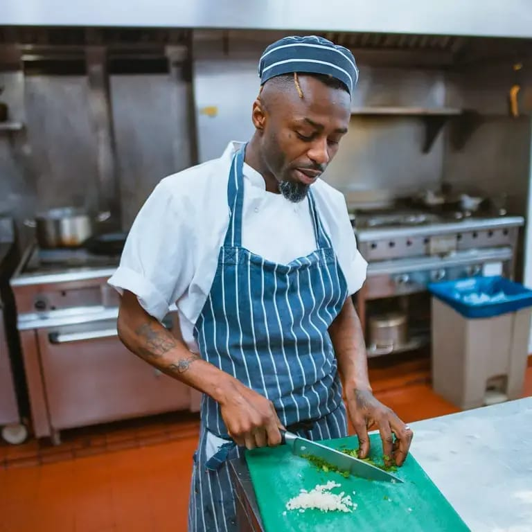
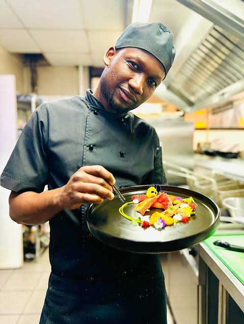
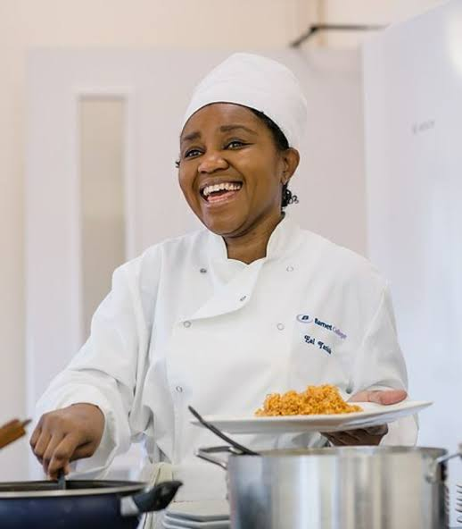
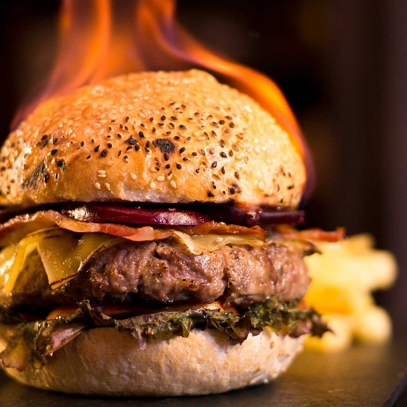
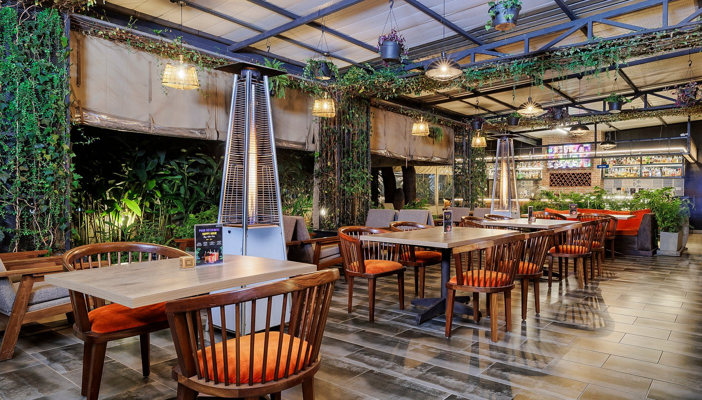

.jpg)


A Dream Born by the
Lakeside
LakeBite was founded in 2013 by Nairobi-born chef Mwangi Kariuki and entrepreneur Amina Njoroge, united by a singular passion: to create a dining experience that celebrated Kenya's extraordinary culinary soul. What began as a small 30-seat eatery in Westlands quickly blossomed into one of Nairobi's most beloved fine-dining destinations.
The name "LakeBite" pays homage to the abundant lakes that define East Africa's landscape — Victoria, Naivasha, Turkana — and the incredible fresh produce and fish they provide. From our first day, we have worked exclusively with Kenyan farmers, fishermen, and artisan producers.
Today, LakeBite holds three rooms across our Westlands flagship, hosts over 400 guests per week, and has been recognized by the East Africa Culinary Awards five years running.
Mission & Vision
Our Mission
To honour Kenya's culinary heritage by crafting exceptional dining experiences that champion local ingredients, elevate indigenous recipes, and support the communities that grow our food — all served with genuine warmth and world-class hospitality.
Our Vision
To be East Africa's most celebrated culinary institution — a place where Kenyan cuisine takes its rightful place on the global fine dining stage, and where every guest departs with a deeper love for this extraordinary land and its flavours.
Our Values
Sustainability, community, excellence, and creativity guide every decision we make — from the farm partnerships we choose to the way we plate a dish. We believe fine dining and responsibility are inseparable.
Meet Our Chefs
The creative hearts behind every dish — trained across Africa, Europe and Asia, but always rooted in Kenya.

Mwangi Kariuki
Executive Chef & Co-FounderTrained at Le Cordon Bleu Paris and Mugaritz in Spain, Mwangi returned to Kenya with a mission to reimagine Kenyan cuisine through the lens of modern gastronomy. His Nyama Choma is legendary.

Aisha Hassan
Head Chef — Swahili CuisineBorn in Mombasa's Old Town, Aisha brings the authentic spiced traditions of the Swahili coast to Nairobi. Her pilau and biryani have earned national acclaim and packed our dining room every Friday.

Daniel Kimani
Pastry & Desserts ChefA graduate of the Nairobi Culinary Institute, Daniel crafts desserts that marry French technique with tropical East African ingredients — mango, passion fruit, tamarind, and fresh coconut.
Designed for the
Art of Dining
Our 280-seat Westlands restaurant was designed by award-winning Nairobi studio Archcraft to evoke the serene beauty of Kenya's Rift Valley lakes. Warm earth tones, locally sourced timber, handwoven textiles from Kitui artisans, and flowing water features create an environment of understated luxury.
Three distinct dining rooms — the Main Hall, the VIP Conservatory, and the Open-Air Terrace — each offer a unique ambiance. Whether it's an intimate dinner for two or a corporate event for 150, LakeBite's spaces adapt to your vision.


